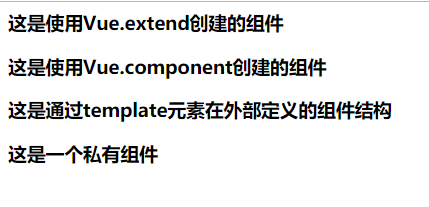

<html>
<head>
<title>vue创建组件</title>
<meta charset="utf-8">
</head>
<body>
<div id="app">
<my-com1></my-com1>
<my-com2></my-com2>
<my-com3></my-com3>
</div>
<div id="app2">
<private></private>
</div>
<template id="temp1">
<div>
<h3>这是通过template元素在外部定义的组件结构</h3>
</div>
</template>
<template id="temp2">
<div>
<h3>这是一个私有组件</h3>
</div>
</template>
</body>
<!-- 这里请引入cdn或者是下载到本地的vue.js -->
<script src="node_modules\vue\dist\vue.js"></script>
<script>
//ps:组件模板只能有一个根元素
//一、创建全局的组件
//方式1 使用中间变量
//1.1使用extend创建
var com1 = Vue.extend({
template:'<h3>这是使用Vue.extend创建的组件</h3>'
})
//1.2使用Vue.component(),定义组件的名称
Vue.component('myCom1',com1);//使用驼峰命名是则在引用时就需将大写的字符变为小写，并以-连接两个单词，不使用则引用时标签名与定义一致
//方式2 不使用中间变量
Vue.component('myCom2',Vue.extend({
template:'<h3>这是使用Vue.component创建的组件</h3>'
}))
//更简洁的方式
Vue.component('mycom2',{
template:'<h3>这是使用Vue.extend创建的组件</h3>'
})
// 方式3 通过在template元素，在被控制的#app外面定义组件的模板
Vue.component('myCom3',{
template:'#temp1'
})
let vm = new Vue({
el: "#app",
data:{
}
});
//二、创建私有组件
let vm2 = new Vue({
el: "#app2",
data:{
},
components:{
private:{
template:"#temp2"
}
}
});
</script>
</html>效果：
